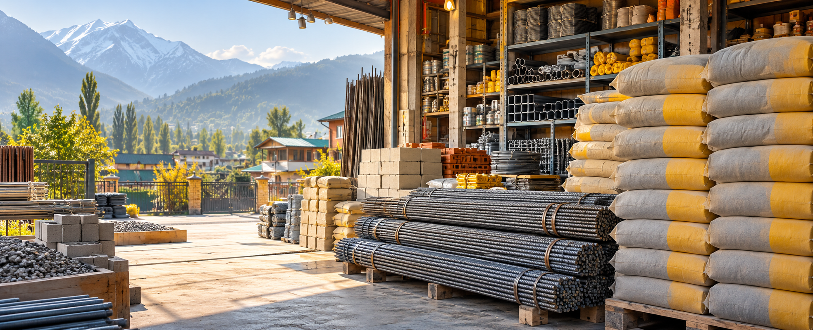

Cement
General construction cement for masonry, slabs, plaster and repairs.

Trehgam, Kupwara
Reliable cement, iron, steel and construction materials for homes, shops and site work across the Kupwara region.
Stocked for construction
Visit MIR Cement and Iron Store for dependable building supplies, practical advice and materials selected for day-to-day construction work in and around Trehgam and Kupwara.
General construction cement for masonry, slabs, plaster and repairs.
Reinforcement bars and iron material for site and structural needs.
Steel supply for frames, supports, fabrication and building work.
Useful construction hardware for everyday contractor requirements.
Built around trust
Whether you are starting a small repair, building a home or managing a site, the store keeps the focus on clear material choices and straightforward local service.
Ask what suits your site, quantity and construction stage.
Plan cement and iron purchases for larger building work.
Find the shop quickly through the verified Google Maps location.
Visit the store
Use the map below for navigation to MIR Cement and Iron Store. For current stock, pricing and timing, contact or visit the shop directly.
Navigate now